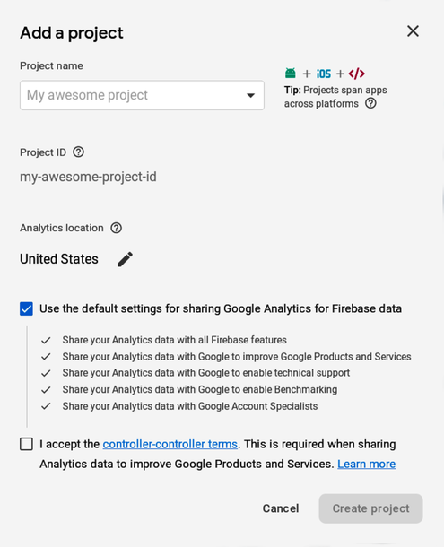

What Is Firebase?
The traditional way to build web and mobile apps is by having a front end and a back end. The front end is what is built using tools like Flutter, platform-specific native SDKs, React or HTML and it’s run on a the users’ client device, whereas the back end is ran on a server and is built with tools like PHP, Spring or Node.js.
Firebase aims to replace most of the features run on server-side software with their own services that connect directly to apps using Google’s own API instead of using standard HTTP requests. Apps built using Firebase are usually simpler to set up and less complicated to maintain. There is a free plan (called Spark) that allows a limited number of connections and only offers limited storage and computing, but you don’t need anything more to complete the tasks described in this chapter.
Getting Started
Let’s start by navigating to the Firebase Console, logging into Google and creating a new project:
after that, you’ll get the following popup window:

Choose a project name (for this example, we’ll use ChatOnFire from now on for all project/app names) and the closest servers to your location in the world. Now you need to connect your app to Firebase, and this has to be done separately for the Android and iOS configuration of the app by following the instructions provided on screen, keeping in mind that you can find the platform-specific configuration for each platform the app runs on in the android and ios directories of your app tree.
After completing the platform-specific configuration, we need to start connecting Firebase to Flutter, and there are a bunch of Google-developed Flutter packages on Dart Pub that help us build apps using Flutter and Firebase.
Firebase for Flutter
After installing the firebase_core package (you know the drill, there’s no need for further explanations, remember to run flutter packages get after editing pubspec.yaml) we need to worry about the specific features we need for our app. There is a complete list of Flutter Firebase packages on GitHub’s official Flutter account.
Let’s start with the most commonly used Firebase tool: the Cloud Firestore database.
The Firebase Cloud Firestore
The Firebase Cloud Firestore is ideal for data that is subject to frequent additions and needs to be accessed in real time. This means it is perfectly suited to the creation of a chat app.
For this example, navigate to Database -> Rules in the Firebase Console and change the rules to the following so that we don’t need to authenticate (we’ll worry about that Authentication).:
| |
service cloud.firestore { |
| |
match /databases/{database}/documents { |
| |
match /{document=**} { |
| |
allow read, write; |
| |
} |
| |
} |
| |
} |
What is commonly referred to in any SQL DBMS as a table is called a collection in Cloud Firestore. Let’s create one. Since we’re going to build a chat app, we’ll create one to store messages sent by the users.
Creating a Collection
Since our example is going to be a simple public chatroom, we just need to store three pieces of data about the message:
-
Who sent the message, which will be a string that we’ll initially set to Anonymous for each message, but that will be the user ID of the sender (which is a string) after we implement authentication.
-
The message body itself (another string).
-
The date and time at which the message was sent, which can be set to the Firestore data type timestamp, which is converted to a DateTime object in Dart.
So, let’s go to Databases -> Data in the Firebase Console, click the Add collection button, which will prompt you to enter a name for the collection. We’ll use Messages as the collection name. After that, you’ll be prompted to enter the data for the first document to be added to the collection.
The Document ID doesn’t have to be anything in particular, so you can click the Auto-ID button to get it automatically filled for you by random characters;
We also need to add all of the fields we mentioned earlier, choosing the appropriate types and setting an appropriate value for each field to be used for the creation of the first message. For our example, let’s set the fields in the following way:
-
A string called from to identify the sender, with Anonymous as the value.
-
A string called msg, which will be the body of the message, the value of which we you could set simply to Hi, as a test.
-
A timestamp called when, which you should set to your current time converted to UTC time.
We are using UTC time for the when field because we want the date and time to be in the user’s local time, so we keep the UTC time in the database and convert it to the local time in the app. We’ll have to keep this in mind when sending messages from the app because in that occasion we’ll have to convert the local time to UTC.
Interacting with Cloud Firestore in Flutter Apps
To use Firestore in our Flutter app, we’ll take advantage of the cloud_firestore package.
Let’s start by adding the cloud_firestore package to the dependencies in pubspec.yaml:
| |
dependencies: |
| |
flutter: |
| |
sdk: flutter |
| |
firebase_core: |
| |
cloud_firestore: |
and importing it into main.dart:
| |
import 'package:cloud_firestore/cloud_firestore.dart'; |
We interact with Cloud Firestore using an instance of the Firestore class created using Firestore.instance. We can access a collection with Firestore.instance.collection("collectionName") where collectionName is the name of the collection we want to access. The type of data returned by that is CollectionReference, and we will explore how to use that in this section.
Reading from the Cloud Firestore
If we want to access a certain document directly, we use the:
| |
CollectionReference.document(path) |
simple query method (where) path is actually the ID of the document, which corresponds with the path leading to the document within the collection. This returns a DocumentReference, and doesn’t actually fetch the document. To fetch it, we need to call DocumentReference.get, which returns a Future<DocumentSnapshot>. After awaiting or otherwise getting the DocumentSnapshot itself, we can access the data contained in the document by accessing the DocumentSnapshot.data property, which contains a Map of the data contained in the document.
For example, if we had the name of a collection stored in a variable called collectionName and we wanted to access document with ID docPath, and in particular its property "myMember" and set it to the data variable, we would need to write the following:
| |
var firestore = Firestore.instance; |
| |
var data = ( |
| |
await firestore |
| |
.collection(collectionName) |
| |
.document(docPath) |
| |
.get() |
| |
).data["myMember"]; |
Querying a single document is useful for some purposes, but what we really want in a chat app when fetching messages is a way to access the list of all of the documents that have been stored in the collection.
To do that, we can use the CollectionReference.getDocuments method, which returns all of the documents in the given collection in a Future, but its disadvantage is that we need to fetch it again every time we want to update the list of messages, which doesn’t really go well with the real-time nature of instant messaging.
What we want is to get the messages as a Stream that is changed in real time to yield the list of all messages updated in real time. This is done using the CollectionReference.snapshots method, meaning we can use it to get a Stream of the messages by writing:
| |
Firestore.instance.collection("Messages").snapshots() |
Adding Data to the Cloud Firestore
We can add a document to a Firestore collection by using CollectionReference.add(doc) where doc is a Map assigning a value for each of the document’s fields, like in the following example, which sends an anonymous message to be stored in the collection:
| |
Firestore.instance.collection("Messages").add( |
| |
{ |
| |
"from": "Anonymous", |
| |
"when": DateTime.now().toUtc(), |
| |
"msg": "Hi There From The App", |
| |
} |
| |
); |
In a real app we need to authenticate users, so we’ll start by discovering how we can authenticate users to our Flutter apps using Firebase Authentication.
Deleting or Changing Data from the Cloud Firestore
Given a DocumentReference (the object we get from Firestore.instance.collection(collection).document(document)), we can, in addition to getting the data using the DocumentReference.get as we said earllier, perform some actions on the document:
- Delete it using DocumentReference.delete.
- Change some fields by passing a Map to DocumentReference.updateData.
- Set the contents of the document, creating it if doesn’t exist, by passing a Map to DocumentReference.setData.
All of these methods run asynchronously but don’t return anything.
Authentication
Authentication requires its own firebase_auth package and can be configured in Flutter’s console by going to Develop -> Authentication -> Sign-in method. In our example we’ll authenticate users using their email address and password, which is made very easy by Firebase and is representative of the majority of apps. After selecting it, you’ll be warned that more platform-specific setup is required: specifically, we need to add:
| |
implementation 'com.google.firebase:firebase-auth:16.2.1' |
to the app-level build.gradle dependencies for Android, and:
to the iOS Podfile you should have from the CocoaPods configuration that was needed to connect the iOS app to Firebase.
Using the firebase_auth Package
Let’s import the firebase_auth package, which provides an intuitive Flutter interface to the Firebase Authentication tools:
| |
firebase_auth: ^0.6.2 |
As always, we need to import the firebase_auth package in main.dart:
| |
import 'package:firebase_auth/firebase_auth.dart'; |
The FirebaseAuth
Firebase authentication is achieved using an instance of the FirebaseAuth class, obtained using:
| |
var auth = FirebaseAuth.instance; |
After this, we can use the auth object to handle most authentication-related actions.
Among them, we find:
createUserWithEmailAndPassword(email, password)
which creates a user with the given email and password, and:
signInWithEmailAndPassword(email, password)
which signs in the user with the given email and password.
Package and Library Versions |
|---|

|
The FlutterFire packages (as Google likes to call the Firebase-related Flutter packages), just like the testing interface, are sometimes incompatible with some versions of Flutter or of the platform-specific API (the one we import in the Gradle/CocoaPods configuration) or don’t work at all. Additionally, they tend to have breaking changes from one version to another, meaning the same code has a high change of not working after one or two major releases.
For our example, I used firebase_auth version 0.6.X because that was the only version that consistenly worked with the current Flutter version (1.5) and native API version. If, in the future, you need to use a newer version because of security concerns about the older versions or any other reason. One thing to keep in mind is that the package is slowly switching to using the generic auth.signInWithCredential method, which takes as a positional argument a AuthCredential object.
An AuthCredential object can be generated by calling the getCredential of each AuthProvider, providing to each the arguments it needs to perform the authentication.
You can look at all of the AuthProviders available and the methods you can use to get AuthCredentials on the official firebase_auth API reference. That’s also where you should look in case you upgrade the package version and have issues in general.
|
The FirebaseUser
The final result of an authentication process is the generation of a FirebaseUser variable, which will also be stored. This represents the user account and stores the following information as properties:
-
Its uid, a string equivalent to a typical numerical User ID.
-
Its phoneNumber and/or email address.
-
An isEmailVerified to establish whether a user’s email address has been verified, which is useful when doing email and password authentication.
-
A displayName and photoUrl we can set by changing these properties directly.
To make changes to these properties (for example to set the display name), we need to create an UserUpdateInfo object, which will have all of these properties. Change any properties you want to change and then run user.updateProfile(userUpdateInfo), where userUpdateInfo is the UserUpdateInfo object containing the changed properties.
To change the user’s email address, you can use user.updateEmail(newEmail), whereas to change the user’s password you can use user.updatePassword(newPassword). You can reload the local profile to match the remote one using user.reload. Keep in mind that this will only have an effect if you reassign the user variable to auth.currentUser.
Firebase’s authentication tools can do a lot: other than just creating and deleting accounts, resetting passwords and changing email address, it allows you to also verify email addresses. Verification happens by calling user.sendEmailVerification, which sends an email containg a verification link to the user. When the user clicks the link, the email will be considered as verified.
The only difference this makes to Firebase itself is that users with a verified email addresses have the user.isEmailVerified boolean property set to true instead of false. You get to decide what to do with unverified users: whether to supply all features, only some of them, or no features at all.
You also get to decide what the email sent to the user will look like: by going to Authentication -> Templates you can choose the sender name, some aspects of the sender email address and the entire body of the email sent to the user.
Writing Log-In and Sign-Up Methods
That’s the theory, here are two examples of how you can use those methods to write an interface to the Firebase Authentication API for our app.
This is what a sign-up method for email and password authentication could look like:
| |
Future<FirebaseUser> signUp( |
| |
String email, String password |
| |
) async => |
| |
_auth.createUserWithEmailAndPassword( |
| |
email: email, |
| |
password: password |
| |
); |
and this is how we could write a log-in method
| |
Future<FirebaseUser> logIn( |
| |
String email, String password |
| |
) async => |
| |
_auth.signInWithEmailAndPassword( |
| |
email: email, |
| |
password: password |
| |
); |
Checking Whether the User is Logged-In and Getting Information on the Current user
Running:
will return (asynchronously) the currently logged in FirebaseUser.
If we haven’t performed log-in yet, it will return null, meaning there is an easy way to check whether log-in has happened.
Log-In Persistency in Local Cache
Firebase will preserve login information in local storage, meaning we don’t have to worry about persistence of user data on the local user’s device since Firebase will take care of that for us as well.
Sign Out
Given that the user data is kept by Firebase indefinetly, to sign out a user you need to run:
which is an asynchronous method that doesn’t return anything.
Combining Authentication and Database Access
Firebase is great: you just need to authenticate the user and then any operation you try to execute on a Firebase database will be executed on behalf of that user. You don’t even need to think about it: Firebase does it on its own and Flutter supports it perfectly. That’s what we’re going to take advantage of when we build our chat app in Building the Chat App.